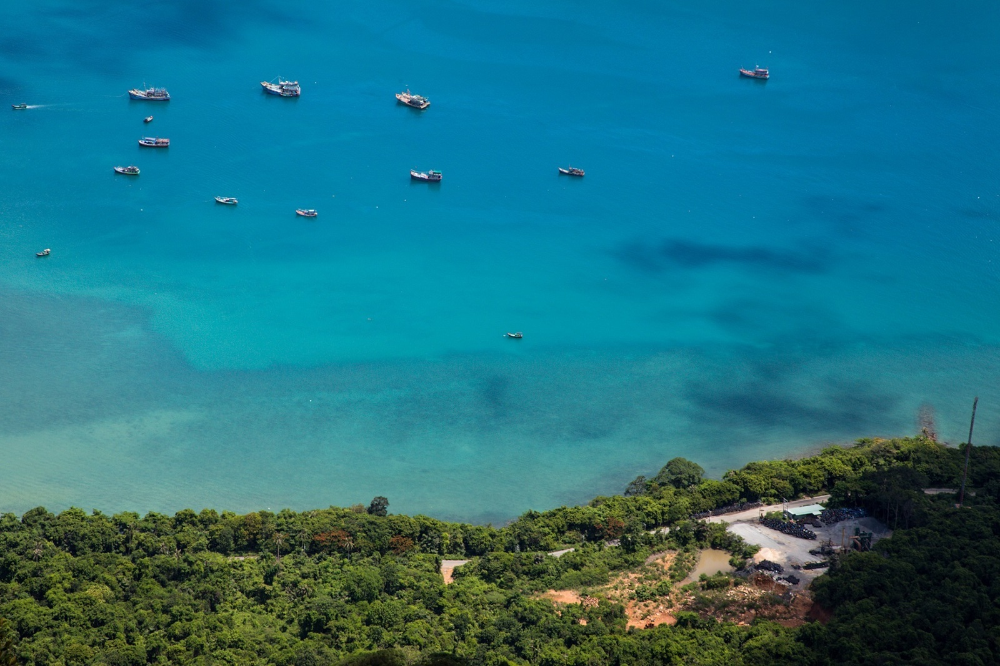
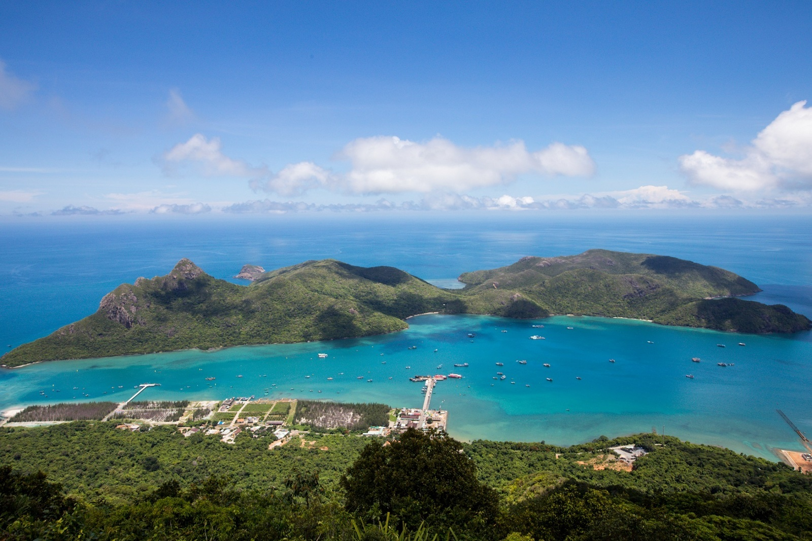
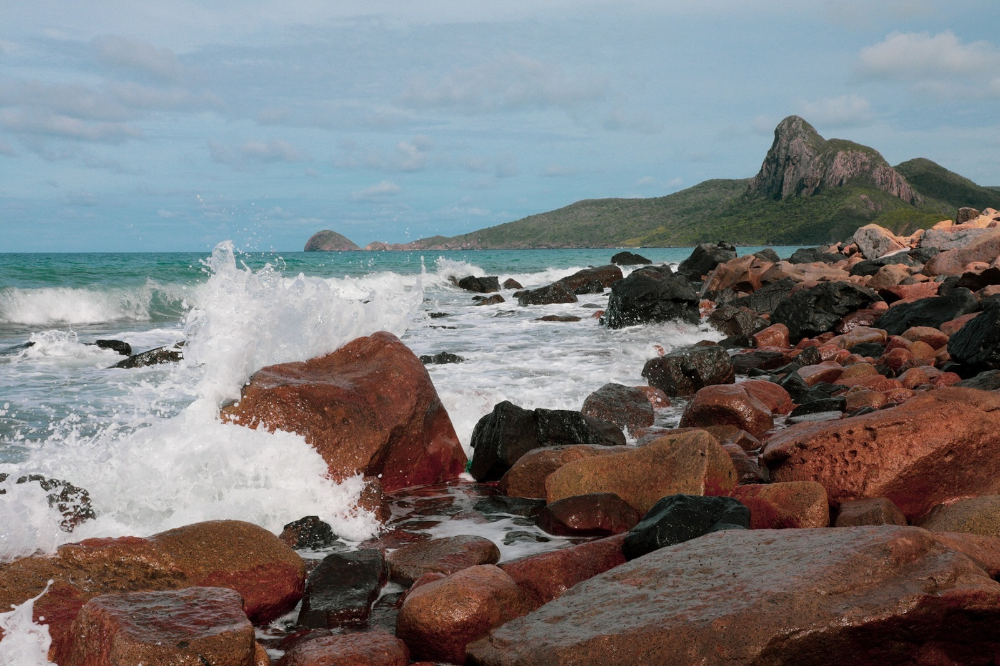
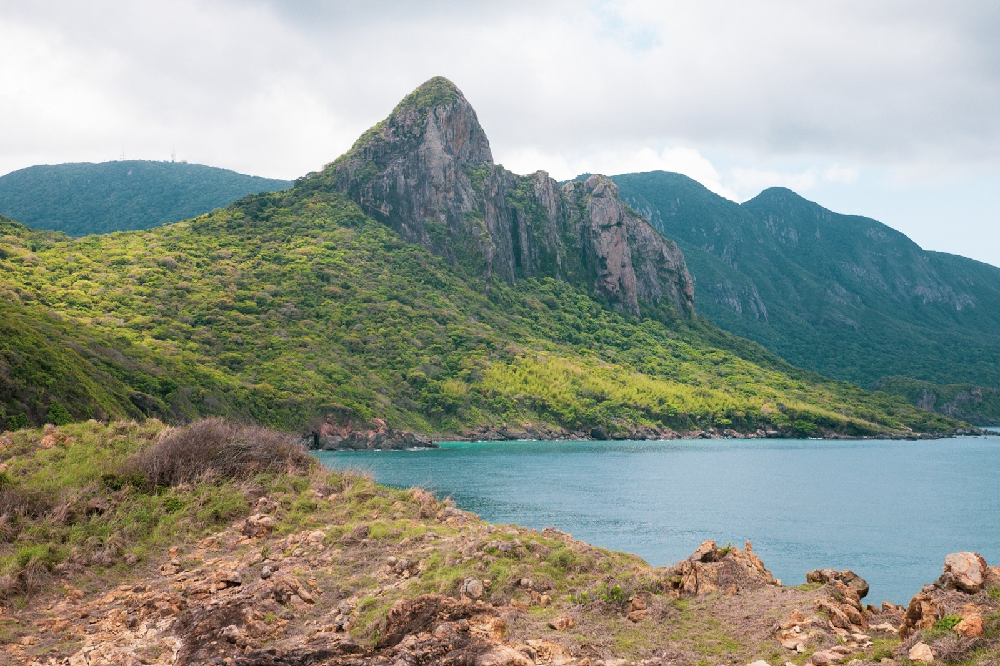
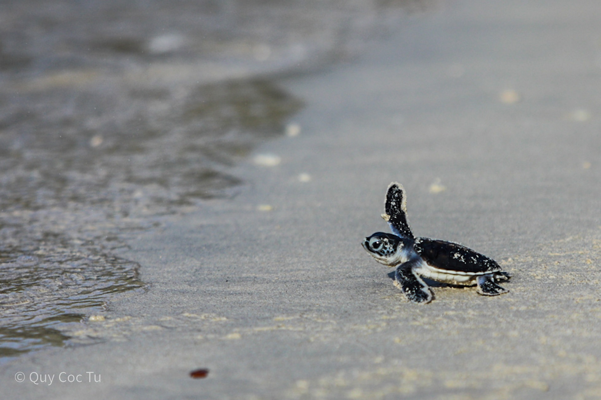
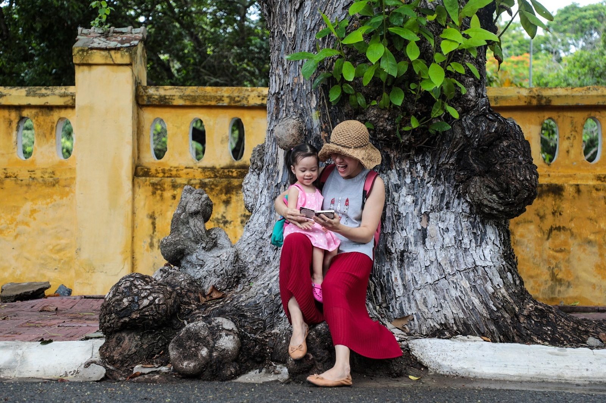
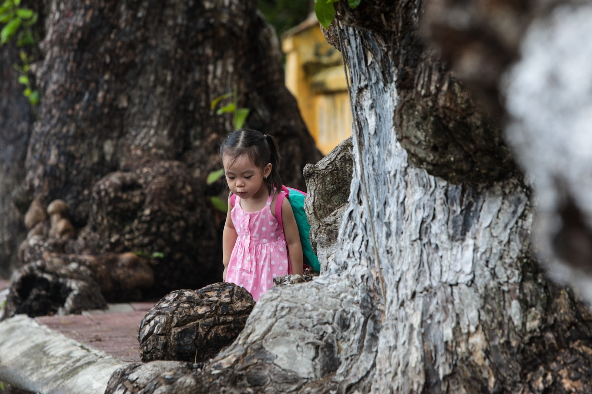
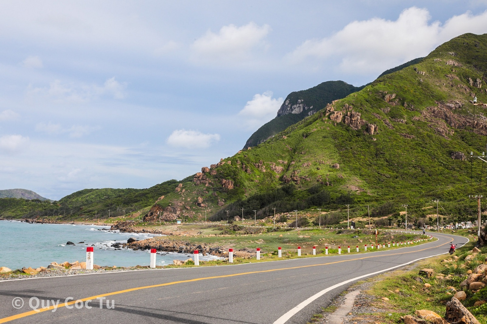
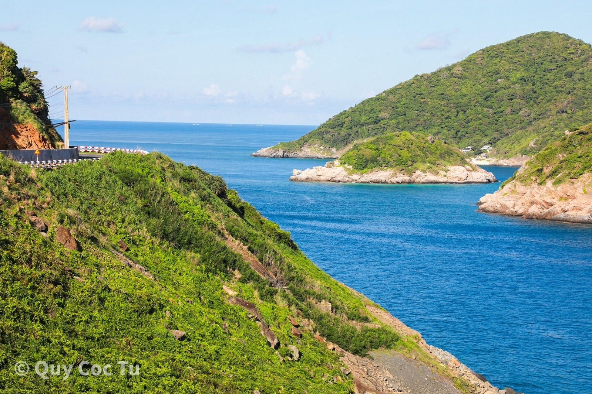

5 ngày 4 đêm khám phá Côn Đảo
Ngày 1:
Ngày đầu tiên đến Côn Đảo, sau khi check-in khách sạn, Hải An thuê xe máy, cùng vợ và con gái hướng về phía mũiTàu Bể, trên cung đường nối sân bay Cỏ Ống và thị trấn Côn Sơn. Ở đây có nhiều phiến đá dựng đứng, kích thước dài, ôm trọn mũi biển theo hình vòng cung. Rong ruổi trên những cung đường uốn lượn, thu vào tầm mắt anh là khung cảnh bao la, một bên biển xanh trải dài tới chân trời, một bên là những ngọn đồi phủ xanh.
Quay về trung tâm thị trấn, anh tiếp tục chạy cung đường tây bắc. Từ đây sẽ đi qua mũi Cá Mập, khu vực có bờ cát mịn, một bên là vách đá dựng đứng, mang vẻ hoang sơ. Đây là điểm đến ngắm bình minh đẹp nhất tại Côn Đảo, ngoài ra là cắm trại, dã ngoại.
   Trên hành trình, gia đình 3 người dừng lại chụp ảnh tại bãi Nhát. Đây là bãi biển chỉ xuất hiện vài giờ một ngày, khi thủy triều rút. Do chưa có tác động của con người, bãi biển còn nguyên sơ với cát, lẫn sỏi đá phủ rêu xanh.
Ngày 2:
Thả rùa con về biển là trải nghiệm mà gia đình anh đặc biệt yêu thích trong chuyến đi. Mỗi năm vào mùa sinh sản từ tháng 4 đến tháng 10, rùa thường lên cạn đẻ trứng ở các đảo Bảy Cạnh, hòn Cau, hòn Tre, hòn Tài Lớn... Nhưng khu vực khai thác du lịch và nhiều rùa nhất là hòn Bảy Cạnh.
Lịch trình tiếp theo trong buổi sáng là chinh phục 3 điểm định vị đường cơ sở, xác định lãnh hải ở Côn Đảo. Do phải di chuyển xa bằng cano và khó đi, trải nghiệm này anh đi một mình.
Ngày 3:
Ngày 3, thời tiết dần chuyển xấu, trời có mưa, vì vậy các hoạt động trên biển. Gia đình Hải An tới thăm hàng bàng cổ thụ. Ở Côn Đảo có 79 cây được công nhận là cây di sản Việt Nam, với tuổi đời trên 100. Một số tuyến đường trung tâm có nhiều cây cổ thụ là Tôn Đức Thắng, Lê Duẩn. Những cây cổ thụ có hình dáng to lớn, nhiều cục u sần sùi, được người dân đảo tự hào như những "nhân chứng" sống, cùng trải qua nhiều năm tháng đầy biến động.
 Sau đó, cả gia đình tới chụp ảnh tại cầu cảng và thăm nghĩa trang Hàng Keo. Đây là một trong 2 nghĩa trang nổi tiếng nhất ở Côn Đảo, do thực dân Pháp xây dựng và là nơi an nghỉ của hàng nghìn tù nhân chính trị. Trước kia, di tích có trồng nhiều cây keo nên có tên gọi như ngày nay. Giờ đây xung quanh nghĩa trang không còn keo mà là những hàng dương xanh, nhưng phần mộ được tìm thấy được di dời về nghĩa trang Hàng Dương.
Ngày 4+5:
Cung đường tây bắc hiện đang được xây dựng, chưa khai thác cho du lịch, vì vậy cần xin giấy phép để tham quan. Đây là đường chạy sâu vào vườn quốc gia Côn Đảo nên 2 bên là những hàng cây cổ thụ. Gia đình Hải An bắt gặp nhiều khỉ, kỳ đà... Đặc biệt, cung đường được thiết kế thành vòng tròn, chạy qua hầu hết các địa danh nổi tiếng của đảo như mũi Cá Mập, bãi Nhát, đỉnh Tình Yêu...
 Lịch trình tiếp theo trong ngày là xem máy bay cất, hạ cánh ở sân bay Cỏ Ống. Đây là sân bay nằm cách bãi biển khoảng 100 m, nên người đứng ở dưới có thể nhìn thấy máy bay hạ rất gần đầu. Bãi Đầm Trầu và bãi Rong là 2 nơi đẹp nhất để ngắm và chụp ảnh máy bay. Đặc biệt, ở bãi Rong, khi thủy triều rút còn xuất hiện cồn cát nổi lên giữa biển, để dạo bộ hoặc đi xe máy ngắm cảnh.
Ngày cuối cùng, gia đình cùng nhau cắm trại ở bãi Đầm Trầu, tận hưởng không gian bao la của biển xanh, cát vàng. Cảnh quan ở đây còn rất hoang sơ, được ví như nàng tiên ngủ say của Côn Đảo. Buổi trưa có nhiều khỉ từ rừng gần đó ra ngoài chơi.